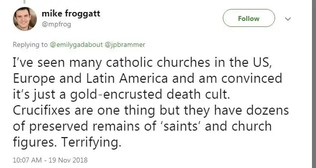

This year on All Souls Day, I was involved in a long discussion on Twitter with a non-denominational brother in Christ who refused to consider that purgatory could be true. And of course, the discussion ended up including all kinds of related tangents, including, the ever important, where did Scripture come from? Who determined the canon? How do we know? Because let’s face it, if we can’t even agree on the terms or base of our faith, the discussion becomes quickly thwarted.
For example, earlier this week, I read this Scripture passage: “If he were not expecting the fallen to rise again, it would have been useless and foolish to pray for them in death. But if he did this with a view to the splendid reward that awaits those who had gone to rest in godliness, it was a holy and pious thought.” (2 Mc 12:44-45)
Wait what? Sounds like a pretty good Biblical defense of purgatory and praying for the dead, right? Of course, it’s from the Catholic version of Scripture, the original canon, from a book tossed out during the Reformation. So, how can this discussion really advance?
In the Catholic faith, we focus this month on praying for the dead and other such matters. And I’ve been seeing related discussions popping up by those who interpret our faith through uninformed eyes:

Terrifying? “Gold-encrusted death cult?” Honestly I had to giggle. I shared this with friends on Facebook, which prompted a lively discussion, reminding me of past pontifications on the topic. Looking at how differently we approach religion can go a long way in explaining so many of the misunderstandings that crop up repeatedly in discussions with our Protestant brothers and sisters.
Back in 2014, I shared my thoughts on this in a post, “Why Matter Matters”. Without a doubt, relics, purgatory, incense and skeletons all make me grateful to be Catholic, and provide one answer to why I remain.
A central paragraph in that post comes from theology professor Dr. Charles Bobertz: “To be Catholic is to be religious and then spiritual, because God is in the world…(He) is in the world, making the world sacred.” I love that! God is in us, too, Bobertz had added, making us sacred. This vision of faith “affirms the sacredness of the Church.”
I just find this so beautiful! And I love all the symbols and earthly matter our faith incorporates.
I also appreciate that we use crucifixes to remind us of Jesus’ great sacrifice; that we don’t just employ empty crosses in our sanctuaries, but offer the visual of a bloodied, mangled Jesus, lest we forget what was done on our behalf. This display of Corpus Christi also reminds us of how our own suffering can unite us with Christ’s. “If we have grown into union with him through a death like his, we shall also be united with him in the resurrection.” (Rom 6:5) In other words, we’re going to suffer. So it seems right to stay focused on how to do that, based on how our Lord himself did it.
Back to the “Tweet of Terror” posted above. One friend responded, “hmmm, the body means noting after death. We await glorious resurrected bodies. And relics can really be dangerous ladies, very akin to idols of the Old Testament.”
Refer back to my post pontificating on the Catholic approach to religion as a whole. As Bobertz had said, “To be Catholic is to be religious and then spiritual, because God is in the world.”
The most debated question in Christian circles following Jesus’ death was, according to Bobertz, “Did Jesus rise from the dead in the body or in the spirit only?” This led in turn to the two different approaches to the Christian faith; one focused mainly on the spirit, and the other, on the intermingling of both earthly and spiritual matter.
Catholics take the “earthly and spiritual” approach. Thus, we are not afraid of focusing on matter, not for the sake of obsessing on skeletons and the like, but because of what those bones signify: the resurrection to come.
My friend still persisted on Facebook regarding her distaste for relics and such, saying, “do you agree relics and such CAN turn into idols?”
To which I responded that yes, they can; anything can turn into an idol, and many idols are being adored in our culture today. “These are much more dangerous than saints’ relics,” I said. “(Relics connect) us with those who have gone before us. To me, it seems very human. Which I think God appreciates too, since he made us human.”
My cousin Elly added, “Things don’t ‘turn into idols.’ People make idols out of them — money, power, almost anything there is can be used by people so that it becomes an idol to that person.”
Finally, I offered this: A loved one dies. You’re given a piece of their clothing. Jewelry. A letter they wrote. A shirt or dress they wore. Something to remember them by. Maybe a picture of them. Would you consider these ‘relics’ and wanting to hold them or be near them idolizing them? Or simply staying connected to your loved one through a tangible object that reminds you of them?”
I think of the red flannel shirt of my father’s that I still love to wear, nearly six years after his death. That, to me, is a relic of his. And there’s nothing close to idolizing I’m doing in simply wearing it and feeling close again to my father. Nothing at all.
In the end, I see it all as a misunderstanding. I can even concede that on the outside, it would look a bit strange, the attention we pay to bodies, dead and otherwise. But we are earthly! We are both body and spirit. And God knows that. So he blessed us with a religion, his Church, that has many physical manifestations so we, as humans, can grasp and hold them, gaze upon and ponder them. Always understanding they lead us to something else; something spiritual. And that is “the rest of the story.”
If we only see the Catholic earthly matter without considering how it synchronizes with and is completed by the spiritual, we’ll miss it all. And in doing so, we’ll continue to misunderstand what’s truly at the heart of so many Catholic beliefs.
I happily profess, once again, that matter matters, and for this we are blessed.
Q4U: What earthly manifestation of faith are you most drawn to? Does distinguishing between how the Jewish religion revered the body help you understand why Catholics, who proceeded from Judaism, understand and lived out our faith?